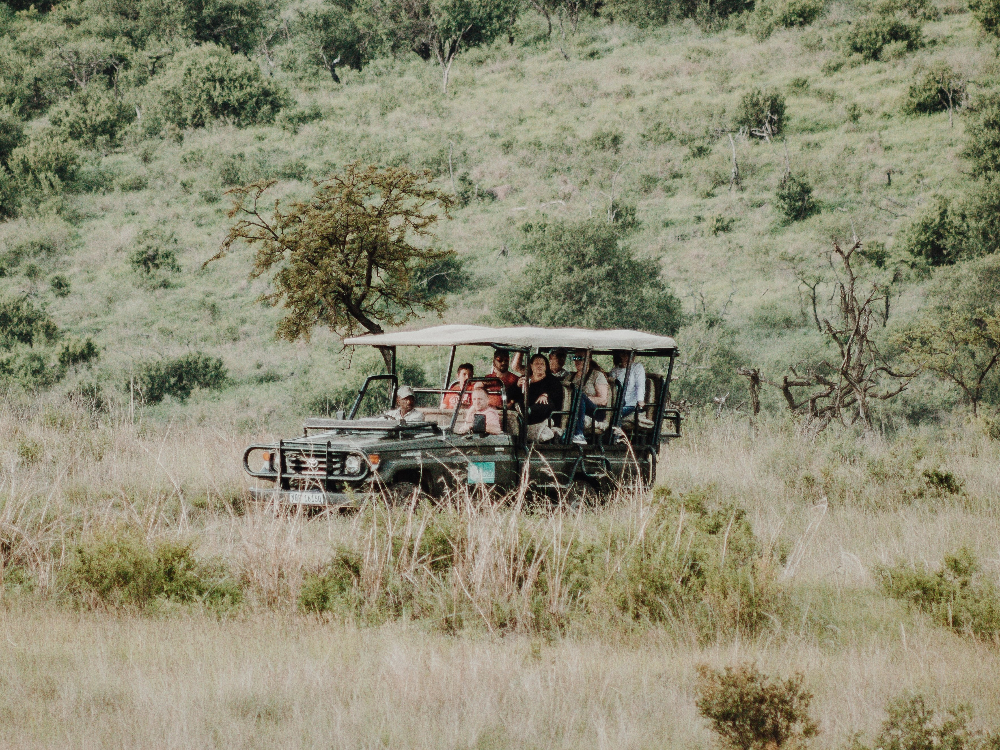

Our Story
It all began with my great-grandfather, Jonathan the 1st. He possessed an unparalleled passion for the outdoors and wildlife. His journey started by leading small groups through the very land he had grown up on, exploring with friends both before and after school. This experience granted him the privilege to observe and learn from various animals and their habits. Over time, the groups he led expanded, necessitating additional help. It was then that he chose to pass on his knowledge to his son, my grandfather, who, in turn, imparted it to my father and me. With four generations deeply connected to this land, we possess an intimate knowledge of every watering hole and treetop.
Our expertise is a result of firsthand experiences, making us fervent wildlife enthusiasts, and we are eager to share our knowledge and adventures with all of you. Don't miss the opportunity to book now for the adventure of a lifetime!
Our expeditions typically commence at 7 am, providing the opportunity to witness the breathtaking sunrise and observe the elephants as they enjoy their morning drink. Following this, we venture into the grasslands to study the lion families we've grown fond of, along with the passing zebras and graceful gazelles. We then return to our headquarters for a hearty lunch.
In the afternoon, our journey takes us by the towering giraffes, the mighty hippos, and the magnificent African buffalos. Along the way, we eagerly share valuable insights and information about each of these incredible creatures. The adventure we offer is truly remarkable!
Our mission is to provide informative and educational experiences, shedding light on both wildlife and the importance of wildlife conservation. We are enthusiastic about carrying forward our family's legacy and sharing our extensive experiences with all of you. We can't wait to welcome you and embark on this incredible journey together.

Big Five Game, Can You Spot Them All?
- Lion
- Leopard
- Rhinoceros
- Elephant
- Cape Buffalo